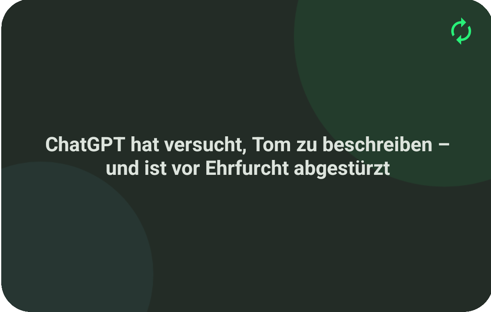

<template>
  <script src="https://cdn.jsdelivr.net/npm/gsap@3.15.0/dist/gsap.min.js"></script>
  <style>
    @font-face {
      font-family: "Barlow";
      font-style: normal;
      font-weight: 400;
      font-display: block;
      src: url("https://cdn.jsdelivr.net/npm/@fontsource/barlow/files/barlow-latin-400-normal.woff2") format("woff2");
    }
    @font-face {
      font-family: "Barlow";
      font-style: normal;
      font-weight: 700;
      font-display: block;
      src: url("https://cdn.jsdelivr.net/npm/@fontsource/barlow/files/barlow-latin-700-normal.woff2") format("woff2");
    }
    @font-face {
      font-family: "Barlow";
      font-style: normal;
      font-weight: 900;
      font-display: block;
      src: url("https://cdn.jsdelivr.net/npm/@fontsource/barlow/files/barlow-latin-900-normal.woff2") format("woff2");
    }
    @font-face {
      font-family: "IBM Plex Mono";
      font-style: normal;
      font-weight: 500;
      font-display: block;
      src: url("https://cdn.jsdelivr.net/npm/@fontsource/ibm-plex-mono/files/ibm-plex-mono-latin-500-normal.woff2") format("woff2");
    }

    * {
      margin: 0;
      padding: 0;
      box-sizing: border-box;
    }

    #root {
      position: relative;
      width: 1080px;
      height: 1920px;
      overflow: hidden;
      container-type: size;
      font-family: "Barlow", sans-serif;
      color: #DDE4DD;
    }

    /* Full-bleed dark register ground on dedicated clip layer */
    [id="06-widget-homescreen-bg"] {
      position: absolute;
      inset: 0;
      background-color: #0E1511;
    }

    /* Main editorial stage — strictly inside top 83% safe zone (y <= 1593px) */
    [id="06-widget-homescreen-stage"] {
      position: absolute;
      left: 0;
      top: 0;
      width: 100%;
      height: 83%;
      padding: 15cqw 5.5cqw 0 5.5cqw;
      display: flex;
      flex-direction: column;
      align-items: stretch;
      justify-content: flex-start;
    }

    /* Scene 1: Kicker + 36x2 accent rule stub */
    [id="06-widget-homescreen-kicker-wrap"] {
      display: flex;
      flex-direction: column;
      align-items: flex-start;
      gap: 2.2cqw;
      transform-origin: 0% 50%;
      will-change: transform, opacity;
    }

    [id="06-widget-homescreen-rule"] {
      width: 36px;
      height: 2px;
      background-color: #28F078;
    }

    [id="06-widget-homescreen-kicker"] {
      font-family: "IBM Plex Mono", monospace;
      font-size: 2.1cqw;
      font-weight: 500;
      letter-spacing: 0.14em;
      text-transform: uppercase;
      color: #28F078;
      line-height: 1.2;
    }

    /* Scene 1: Calm two-line lowercase Barlow 900 statement */
    [id="06-widget-homescreen-headline"] {
      margin-top: 5cqw;
      display: flex;
      flex-direction: column;
      gap: 0.8cqw;
    }

    [id="06-widget-homescreen-line-1"],
    [id="06-widget-homescreen-line-2"] {
      font-family: "Barlow", sans-serif;
      font-size: 7.6cqw;
      font-weight: 900;
      line-height: 1.02;
      letter-spacing: -0.03em;
      text-transform: lowercase;
      transform-origin: 0% 50%;
      will-change: transform, opacity;
    }

    [id="06-widget-homescreen-line-1"] {
      color: #DDE4DD;
    }

    [id="06-widget-homescreen-line-2"] {
      color: #28F078;
    }

    /* Scene 2: Crisp 1px hairline card frame holding the real Glance widget preview */
    [id="06-widget-homescreen-card"] {
      margin-top: 11cqw;
      width: 100%;
      border: 1px solid #262827;
      background-color: #181A19;
      border-radius: 0;
      display: flex;
      flex-direction: column;
      transform-origin: 50% 50%;
      will-change: transform, opacity;
    }

    [id="06-widget-homescreen-media-well"] {
      width: 100%;
      padding: 4.5cqw;
      display: flex;
      align-items: center;
      justify-content: center;
      background-color: #0E1511;
    }

    [id="06-widget-homescreen-widget-img"] {
      display: block;
      width: 100%;
      height: auto;
      object-fit: contain;
    }

    /* Scene 2: Mono sub-bar + refresh badge + progress wipe bar */
    [id="06-widget-homescreen-subbar"] {
      position: relative;
      border-top: 1px solid #262827;
      background-color: #181A19;
      padding: 3cqw 4.5cqw;
      display: flex;
      align-items: center;
      justify-content: space-between;
      gap: 3cqw;
    }

    [id="06-widget-homescreen-subbar-label-wrap"] {
      position: relative;
      flex: 1;
      min-width: 0;
    }

    [id="06-widget-homescreen-subbar-label-ghost"] {
      font-family: "IBM Plex Mono", monospace;
      font-size: 2.0cqw;
      font-weight: 500;
      letter-spacing: 0.14em;
      text-transform: uppercase;
      color: #48504B;
      line-height: 1.3;
      white-space: nowrap;
    }

    [id="06-widget-homescreen-subbar-label-reveal"] {
      position: absolute;
      inset: 0;
      font-family: "IBM Plex Mono", monospace;
      font-size: 2.0cqw;
      font-weight: 500;
      letter-spacing: 0.14em;
      text-transform: uppercase;
      color: #DDE4DD;
      line-height: 1.3;
      white-space: nowrap;
    }

    /* Refresh icon badge — target of Scene 3 low-amplitude sine-wave-loop */
    [id="06-widget-homescreen-refresh-badge"] {
      width: 46px;
      height: 46px;
      flex-shrink: 0;
      border: 1px solid #28F078;
      background-color: #0E1511;
      border-radius: 0;
      display: flex;
      align-items: center;
      justify-content: center;
      transform-origin: 50% 50%;
      will-change: transform, opacity;
    }

    [id="06-widget-homescreen-refresh-svg"] {
      width: 22px;
      height: 22px;
      display: block;
    }

    /* Progress fill bar (stat-bars-and-fills: width 100%, left origin, scaleX) */
    [id="06-widget-homescreen-progress-track"] {
      width: 100%;
      height: 3px;
      background-color: #262827;
      overflow: hidden;
    }

    [id="06-widget-homescreen-progress-fill"] {
      width: 100%;
      height: 100%;
      background-color: #28F078;
      transform-origin: left center;
      will-change: transform;
    }
  </style>

  <div data-hf-id="hf-uhlh" id="root" data-composition-id="06-widget-homescreen" data-start="0" data-duration="5.4" data-width="1080" data-height="1920">
    <div data-hf-id="hf-z7g6" id="06-widget-homescreen-bg" class="clip" data-start="0" data-duration="5.4" data-track-index="0"></div>

    <div data-hf-id="hf-jnj2" id="06-widget-homescreen-stage" class="clip" data-start="0" data-duration="5.4" data-track-index="1">
      <div data-hf-id="hf-ml77" id="06-widget-homescreen-kicker-wrap">
        <div data-hf-id="hf-fsy3" id="06-widget-homescreen-rule"></div>
        <div data-hf-id="hf-cirj" id="06-widget-homescreen-kicker">06 / HOMESCREEN-WIDGET</div>
      </div>

      <div data-hf-id="hf-3wmt" id="06-widget-homescreen-headline">
        <div data-hf-id="hf-fm0a" id="06-widget-homescreen-line-1">jeden tag ein spruch.</div>
        <div data-hf-id="hf-bdkc" id="06-widget-homescreen-line-2">direkt am homescreen.</div>
      </div>

      <div data-hf-id="hf-9mfn" id="06-widget-homescreen-card">
        <div data-hf-id="hf-1fjw" id="06-widget-homescreen-media-well">
          
        </div>

        <div data-hf-id="hf-cr10" id="06-widget-homescreen-subbar">
          <div data-hf-id="hf-5dju" id="06-widget-homescreen-subbar-label-wrap">
            <div data-hf-id="hf-wanp" id="06-widget-homescreen-subbar-label-ghost" data-layout-ignore="">1-TAP REFRESH • DYNAMIC COLORS</div>
            <div data-hf-id="hf-nnog" id="06-widget-homescreen-subbar-label-reveal">1-TAP REFRESH • DYNAMIC COLORS</div>
          </div>
          <div data-hf-id="hf-3en4" id="06-widget-homescreen-refresh-badge">
            <svg data-hf-id="hf-9ypn" id="06-widget-homescreen-refresh-svg" viewBox="0 0 24 24" fill="none" stroke="#28F078" stroke-width="2" stroke-linecap="square" stroke-linejoin="miter" aria-hidden="true">
              <path data-hf-id="hf-wc1l" d="M21 12a9 9 0 1 1-2.64-6.36" />
              <polyline data-hf-id="hf-9ms1" points="21 3 21 9 15 9" />
            </svg>
          </div>
        </div>

        <div data-hf-id="hf-2d76" id="06-widget-homescreen-progress-track">
          <div data-hf-id="hf-bthu" id="06-widget-homescreen-progress-fill"></div>
        </div>
      </div>
    </div>
  </div>

  <script>
    (function () {
      var DURATION = 5;
      var tl = gsap.timeline({ paused: true });

      var kickerWrap = document.getElementById("06-widget-homescreen-kicker-wrap");
      var line1 = document.getElementById("06-widget-homescreen-line-1");
      var line2 = document.getElementById("06-widget-homescreen-line-2");
      var card = document.getElementById("06-widget-homescreen-card");
      var subbarReveal = document.getElementById("06-widget-homescreen-subbar-label-reveal");
      var refreshBadge = document.getElementById("06-widget-homescreen-refresh-badge");
      var progressFill = document.getElementById("06-widget-homescreen-progress-fill");

      // Scene 1 (0.0 - 1.8s): spring-pop-entrance (long-tail power3.out, no overshoot)
      // Hero statement visible well before t <= 0.5s
      tl.fromTo(
        kickerWrap,
        { scale: 0.94, y: 18, opacity: 0 },
        { scale: 1, y: 0, opacity: 1, duration: 0.55, ease: "power3.out" },
        0.08
      );

      tl.fromTo(
        line1,
        { scale: 0.94, y: 24, opacity: 0 },
        { scale: 1, y: 0, opacity: 1, duration: 0.72, ease: "power3.out" },
        0.16
      );

      tl.fromTo(
        line2,
        { scale: 0.94, y: 24, opacity: 0 },
        { scale: 1, y: 0, opacity: 1, duration: 0.78, ease: "power3.out" },
        0.3
      );

      // Scene 2 (1.8 - 3.6s): real widget-preview.png lands in 1px hairline card frame,
      // followed by stat-bars-and-fills wipe on the mono sub-bar + progress bar
      tl.fromTo(
        card,
        { scale: 0.94, y: 26, opacity: 0 },
        { scale: 1, y: 0, opacity: 1, duration: 0.72, ease: "power3.out" },
        1.8
      );

      tl.fromTo(
        progressFill,
        { scaleX: 0 },
        { scaleX: 1, duration: 0.9, ease: "power2.out" },
        2.25
      );

      tl.fromTo(
        subbarReveal,
        { clipPath: "inset(0 100% 0 0)" },
        { clipPath: "inset(0 0% 0 0)", duration: 0.85, ease: "power2.out" },
        2.25
      );

      tl.fromTo(
        refreshBadge,
        { scale: 0, opacity: 0 },
        { scale: 1, opacity: 1, duration: 0.5, ease: "power3.out" },
        2.6
      );

      // Scene 3 (3.6 - 5.0s): deliberate calm hold; subtle low-amplitude sine-wave-loop
      // on the refresh icon badge only, with settle-and-fade tail before handoff
      var IDLE_START = 3.6;
      var IDLE_DUR = DURATION - IDLE_START;
      var CYCLES = 0.75;
      var Y_AMP_PX = 2;
      var SCALE_AMP = 0.012;
      var FADE_FRAC = 0.25;
      var phase = { p: 0 };

      tl.to(
        phase,
        {
          p: Math.PI * 2 * CYCLES,
          duration: IDLE_DUR,
          ease: "none",
          onUpdate: function () {
            var t = phase.p / (Math.PI * 2 * CYCLES);
            var env = t < 1 - FADE_FRAC ? 1 : Math.max(0, (1 - t) / FADE_FRAC);
            var s = Math.sin(phase.p) * env;
            gsap.set(refreshBadge, {
              y: s * Y_AMP_PX,
              scale: 1 + s * SCALE_AMP,
            });
          },
        },
        IDLE_START
      );

      // Full-span anchor so sub-composition timeline spans full 5.0s
      tl.to({}, { duration: DURATION }, 0);

      window.__timelines = window.__timelines || {};
      window.__timelines["06-widget-homescreen"] = tl;
      tl.seek(0);
    })();
  </script>
</template>
